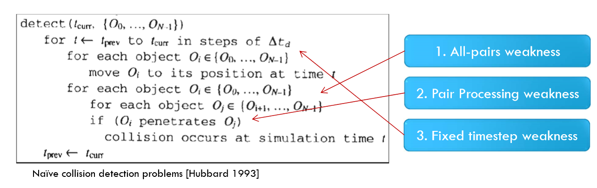
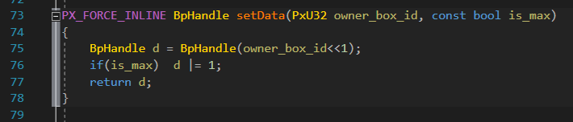

Why do I Write This Blog?
I am currently playing with physX. And actually Unity does not do good optimization for physX. We need to modify the engine for optimization.
When we play with physX or bullet, we always need to determine which broad phase algorithm we use. The most common algorithm is SAP, whose full name is sweep and prune. Currently Unreal Engine 4 and Unity use SAP by default.
Since SAP is one of broad phase algorithms, the very first thing we need to know is what Broad Phase algorithm is.
Broad Phase
Naive collision detection algorithm
I believe every one know the most naive way to detect a two-phase collision in a scene: We detect collision between each collider using a two nested loop:
1 | for collider1 in allColliders: |
There is no need to talk about how naive this method is. As the complexity is $O(n^{2})$, performance is totally not acceptable as collider number grows.
Well… we still need to talk about it. Firstly, $n*n$ collision detect results need to be calculated, second, we need to calculate those results by brute force even if no collider moves. Finally, physics system always calculates using a fixed timestep. This means we need to calculate those results multiple times even if collider only moves in one frame.

Nowadays collision detection algorithm
In current physics engine, collision detection is split into multiple stages. We always split it into broad phase and narrow phase stage.
Broad phase is used to try to exclude those pairs of colliders that never collides with each other. For example, a guy in Beijing and a guy in New York. We never need to calculate whether they collides with each other because there exists no possibility for that.
It needs to be concerned that it is not our goal to exclude all non-collide pairs, we just try to exclude those pairs that are most not likely to collide with each other .
After Broad phase, lots of pairs that are most likely to collide are left. We do those actual collision detection calculation in Narrow phase stage.
So that is how nowadays physics system works.
SAP Basic Idea
The basic idea behind the algorithm is:
Two AABBs overlap iff their projections on the X, Y and Z coordinate axes overlap.
Pretty much like a simplified separate-axis theorem. The projection on a certain axis of each AABB gives a [min, max] intervals and each interval is defined by two “end points”: one min, one max. We can check out SapBox1D in physX source code.
Each EndPoint has been generated form an initial box, and we keep a reference to this box inside the EndPoint structure.
Each box needs to keep track of its 6 endpoints. And each endpoints should have an ID for the box.
On the other hand, we can use one bit to determine whether this endpoint is min or max point. As a result, the EndPoint is like this:
1 |
|
This is the real code in physX:

We need a sorted container to store those EndPoint structures. We can choose to use array or linked list. PhysX use array for this, because this would save a lot of memory. Since two pointers consume 4-byte in a 32-bit system, which doubles the memory cost per-EndPoint.
Since this container needs to be kept sorted. As we all know it always costs a lot to move elements when we sort an array. This means a lot of memory has to be touched, and implementing this as efficiently as possible is key to SAP performance.
And we will have a pair manager to keep track of overlapping pairs of boxes. See BroadPhasePair in PhysX.
SAP Update rules
SAP provide direct and incremental result. We can use direct to calculate the full result of overlapping pairs. And incremental result to detect overlapping start&end.
So, SAP is much better for cases with many static objects in a scene. Because there is no need to do updating operation if no box updates.
Update algorithm is like this:
When a dynamic object with interval [min, max] moves in an axis, if max passes the min of another greater endpoint’s min, an overlapping start is detected; if min passes the max of another greater endpoint’s max, an overlapping end is detected; if max passes the min of another smaller endpoint’s min, an overlapping end is detected; if min passes the max of another smaller endpoint’s max, an overlapping start is detected.
SAP Optimization
As for SAP optimization, it is a really big topic. And I might want to write another blog about it someday…